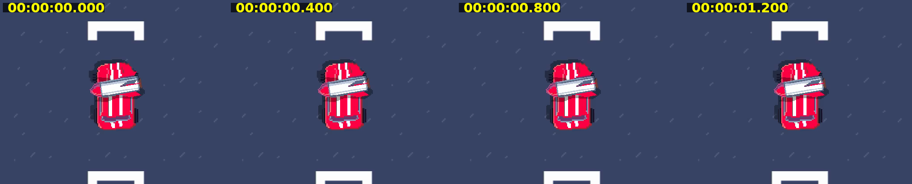
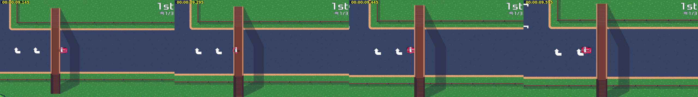

Eval: agateau__pixelwheels_362_mm
One dimension fails: Instruction – Symptom Specificity (dim 4, [Fail - Unspecific Symptoms]). The instruction names three elements (what a vehicle carries, shadows, the race view). The fired rocket's flight direction and its flame are covered by none of them: a fired rocket is no longer carried, no phrase names a flame or exhaust, and the only remaining cover is the stand-alone 'several things ... don't look the way they normally do' / 'Which things ... can be seen in the recording'. The carried rocket's orientation is implied only weakly, and the single example given ('show through something that covers the vehicle') steers readers to draw order: 3 of 4 with-image runs treated it as the whole carried-item defect. The other 18 dimensions score 5. The Attempt4 failure, Tests – Implementation Overfit (dim 11), is fixed: golden + the Mine-style tint of the carried rocket now scores 1.0 (0.0 with 3 NullPointerExceptions under the Attempt4 tests), and Attempt4's jmtBZi2 submission now loses only its genuine exhaust miss (6/7 instead of 3/7). Difficulty holds: 0/3 no-image and exactly 1/4 with-image (2uvoT9Z). CB Oracle 1.0, CB Nop 0.0, local oracle 1.0 twice, local nop 0.0; Check and Analyze pass everything.
Scorecard
Every dimension in rubric order. Click a cell to see what is wrong (or the evidence, if it passed).
COPY assets/recording.mp4 /app/.harbor_assets/. Leak check: instruction.md names no repo, URL, file list, object or mechanism. The mechanism and timestamps appear only in task.toml, which is blind (task_manifest.json blind list: tests/, solution/, task.toml).recording.mp4 and /app/.harbor_assets/recording.mp4. Dockerfile: COPY assets/recording.mp4 /app/.harbor_assets/. None of these changed since Attempt4, where the in-image sha256 matched, and every with-image trial lists .harbor_assets/recording.mp4 (4717379 B) in its submission-skipped.txt, so the file was at that path in each run.diff --git paths in fix.patch equal files_edited exactly (set compare = True, no extra or missing path): ZLevel.java, bonus/Missile.java, racer/VehicleRenderer.java, racescreen/GameRenderer.java, racescreen/Helicopter.java, racescreen/RacerCameraUpdater.java, racescreen/debug/DropLocationDebugObject.java and utils/BodyRegionDrawer.java, all under core/src. There is no test, doc, lockfile or changeset path. fix.patch and files_edited are both unchanged since Attempt4.when(racer.getVehicleRenderer()).thenReturn(new VehicleRenderer(assets, vehicle));, under the comment 'A real Racer always has a VehicleRenderer; code drawing what it carries may use it.' In RocketTest it follows the turboFlame field set-up (plus the VehicleRenderer import); in MissileZOrderTest it comes just before return Missile.create(...). This is what the game does (Racer.java:127: mVehicleRenderer = new VehicleRenderer(assets, mVehicle)), and the VehicleRenderer and SkidmarksRenderer constructors don't touch GL. The two hunk headers (+1,282 and +1,397) and the index lines were regenerated, and test.patch applies cleanly in every CB and local run ('== applying test.patch ==', no 'could not apply'). No assertion changed.EQUIVALENCE TABLE (alternative | correct & in repo context? | test accepts? | evidence):
(A) golden ZLevel split (FLYING_LOW / FG_LAYERS / FLYING_HIGH) | yes | yes | CB Oracle Hk5pFie and local oracle x2: 7/7, 2/2.
(B) carried missile drawn at its vehicle's ZLevel, fired missile on top | yes, plausible | yes | all 4 with-image runs (2uvoT9Z, 4rZRzDa, atD2psm, bmqmxkm) pass missileIsDrawnBeforeForegroundLayer with it.
(C) golden + tint the carried missile with its vehicle's batch colour, unconditionally, as Mine.draw does (the Attempt4 failure) | yes | YES (was NO) | local alt_tint: 1.0, 7/7, 2/2, no NullPointerException; under the Attempt4 tests the same code scored 0.0 (4/7, 3 NPEs). TRIAL EVIDENCE: Attempt4's jmtBZi2 wrote this tint. Its submission replayed on the Attempt5 tests gives 6/7 and fails only rocketExhaustComesOutOfItsTail ('the exhaust should be behind the rocket's tail, it is -0.35 along the rocket axis'), a genuine miss. Under the Attempt4 tests it lost 3 more f2p to the NPE (3/7).
(C2) tint only while the car is falling (2uvoT9Z:
if (vehicle.isFalling()) batch.setColor(mShooter.getVehicleRenderer().getBatchColor());) | yes | yes | 2uvoT9Z 1.0 on the CB; local replay 1.0 on the Attempt5 tests and also 1.0 on the Attempt4 tests, because no test makes the car fall, so this branch never asks for the renderer. Its pass therefore does not exercise the new stub; (C) and the jmtBZi2 replay do.(D) rocket angle: golden degRad / vehicle.getBody().getAngle() / referenceAngle = 0 | yes | yes | 2uvoT9Z used normalizeAnglePiRad(vehicle.getBody().getAngle()) and passed both rocket-angle f2p.
(E) exhaust by cos/sin (golden) or set(refH, 0).rotateRad | yes, same vector | yes | 2uvoT9Z (mReactorPos.set(refH, 0)).
(F) shadow angle radDeg in BodyRegionDrawer | yes | yes | all 7 trials pass rocketShadowHasTheRocketsOrientation.
(G) car shadow sign flip | yes | yes | all 7 trials pass vehicleShadowFallsLikeEveryOtherShadow.
(H) look-ahead built along the heading, with or without moving the camera speed clamp | yes, same vector | yes | all 7 trials pass viewLooksAheadOfTheCarWhicheverWayItHeads; 2uvoT9Z also moved the clamp and removed a duplicate zoom limit, and the p2p still pass.
OTHER GETTERS: Mine.draw also calls gameWorld.getTrack().getMaterialAt() for a mine lying in water, which still returns null from the GameWorld mock. A rocket has no such state, so no plausible rocket fix needs it.
FAILURE CHECK: every failing f2p in the 6 failing trials fails with the nop assertion values (278.8665°, 278.87335°, -0.34987 along the axis), so each is a real miss, not a harness rejection.
RESULT: every correct alternative seen in these trials, in Attempt4's trials and in the local variants passes.
--tests Class.method and runs only those../gradlew --no-daemon --offline and installs nothing at test time; the Dockerfile pre-warms every jar. The new stub only builds a plain VehicleRenderer object, with no GL and no randomness.Delivery gate
Process checks run locally or read from the submitted runs. Each failure is scored under the dimension it belongs to, not as an extra dimension.
Trials
3 no-image runs (pass@3, all must fail) and 4 with-image runs (pass@4, exactly 1 must pass). Rewards come from each run's verifier/reward.txt.
| Trial | Mode | Reward | f2p | p2p | Min | Failed tests |
|---|---|---|---|---|---|---|
task_without_images__6thAsXn | no-image | 0.0 | 4/7 | 2/2 | 2.8 | carriedRocketPointsWhereTheCarPoints firedRocketFliesWhereTheCarPoints rocketExhaustComesOutOfItsTail |
task_without_images__9TAy7cs | no-image | 0.0 | 4/7 | 2/2 | 2.7 | carriedRocketPointsWhereTheCarPoints firedRocketFliesWhereTheCarPoints rocketExhaustComesOutOfItsTail |
task_without_images__maTngvC | no-image | 0.0 | 4/7 | 2/2 | 2.4 | carriedRocketPointsWhereTheCarPoints firedRocketFliesWhereTheCarPoints rocketExhaustComesOutOfItsTail |
task_with_images__2uvoT9Z | with-image | 1.0 | 7/7 | 2/2 | 3.3 | — |
task_with_images__4rZRzDa | with-image | 0.0 | 4/7 | 2/2 | 3.0 | carriedRocketPointsWhereTheCarPoints firedRocketFliesWhereTheCarPoints rocketExhaustComesOutOfItsTail |
task_with_images__atD2psm | with-image | 0.0 | 4/7 | 2/2 | 3.4 | carriedRocketPointsWhereTheCarPoints firedRocketFliesWhereTheCarPoints rocketExhaustComesOutOfItsTail |
task_with_images__bmqmxkm | with-image | 0.0 | 4/7 | 2/2 | 3.1 | carriedRocketPointsWhereTheCarPoints firedRocketFliesWhereTheCarPoints rocketExhaustComesOutOfItsTail |
Issues & suggested fixes
Instruction – Symptom Specificity 2 · [Fail - Unspecific Symptoms]
What is wrong. Two of the six defects have no element named in the text. The fired rocket's flight direction is not 'what a vehicle carries', and nothing names a flame or exhaust, so rocketExhaustComesOutOfItsTail (and the fired half of the angle defect) rests only on the stand-alone 'several things ... don't look the way they normally do'. The carried orientation is implied only by kind, and the one example given ('show through something that covers the vehicle') steers readers to draw order. The trials show that narrowing: 3 of the 4 with-image runs (4rZRzDa, atD2psm, bmqmxkm) treated the 'show through' example as the whole carried-item defect and never looked at the rocket's orientation, flight or flame. None called a defect intended, so the fail rests on the missing elements, not on the 'agents couldn't tell' clause.
Suggested fix. Name the missing elements by type and point to the comparison, without stating what correct looks like (stating it, as Attempt1 did with 'face the same way' / 'trails out behind it', let all 3 no-image runs pass). Suggested line: 'Some of what a vehicle carries or fires is drawn wrongly compared with that vehicle: it can show through something that covers the vehicle instead of being hidden with it, and how it is turned, where it goes once fired and where its flame comes out don't match the same kind of thing elsewhere in the clip.' That reaches the image-carried 3. It also tells a no-image solver to audit the rocket's angle and flame code, so the no-image pass risk goes up. Changing instruction.md changes the checksum: re-run Oracle, Nop and all trials (Option B, 3 no-image + 8 with-image with 1-2 passes, tolerates the spread better).
Dimension details
1. Structure – Task Bundle Files 5 · Pass
| Evidence | Attempt5/Tasks/agateau__pixelwheels_362_mm has all 11 fixed files, none empty: task.toml 6544 B, instruction.md 1017 B, evidence_bundle.json 1859 B, environment/Dockerfile 3063 B, environment/assets/ASSET_MANIFEST.json 605 B, solution/fix.patch 8587 B, solution/solve.sh 349 B, tests/config.json 1450 B, tests/test.patch 59677 B, tests/test.sh 11141 B, tests/verifier.py 8482 B. All three JSON files parse (json.load) and tests/verifier.py passes py_compile. recording.mp4 (4717379 B, sha256 976eac49...ce179) is byte-identical to Attempt4, where ffprobe gave 1920x1080, 30/1 fps, 345 frames, 11.5 s; it decoded again here for the launch close-up (sheet_6). Extras: environment/bugs/bug_01..05.patch (applied and deleted in the same RUN, which is allowed) and README.md. Against Attempt4, exactly four files changed: tests/test.patch (563afc7a → cccb5103), instruction.md (a5a7b246 → 214cef42), task.toml (e52f234e → a68688dd) and README.md (34689610 → 1566d277). The other 14 files are byte-identical, and no file was added or removed. |
|---|---|
| What is wrong | Nothing found. |
| Suggested fix | None. |
2. Structure – Deliverables & Packaging 5 · Pass
| Evidence | Attempt5 has sibling Tasks/ and Trials/ roots. Trials/without_images holds 3 runs (6thAsXn, 9TAy7cs, maTngvC) and Trials/with_images holds 4 (2uvoT9Z, 4rZRzDa, atD2psm, bmqmxkm): 7 trials, the Option A count. Oracle/ (Hk5pFie), Nop/ (6FJvrkW), Check/ and Analyze/ are present too, all run on the Attempt5 files. |
|---|---|
| What is wrong | Nothing found. The folders are extracted here, so they still have to ship as Tasks.tar.gz and Trials.tar.gz with top-level folders Tasks/ and Trials/. |
| Suggested fix | When you submit, tar each root on its own (tar czf Tasks.tar.gz Tasks; tar czf Trials.tar.gz Trials). |
3. Instruction – Requires Visual Evidence 5 · Pass
| Evidence | Read without the video, instruction.md now states three symptoms in words: something a vehicle carries 'can show through something that covers the vehicle, instead of being hidden with it'; some shadows 'don't fall or turn like the others in the clip'; and the race view 'sometimes shows more of the road behind the vehicle it follows than ahead of it'. Beyond that it only says that some of what a vehicle carries is 'drawn or hidden wrongly compared with that vehicle'. It names no object, timestamp, file, repo or mechanism. The no-image trials show the text is still not enough for a complete fix. In every no-image run /app/.harbor_assets was empty ('total 8', only . and ..), and each scored f2p 4/7. All three fixed the z-order, both shadows and the camera from the text plus a code audit. All three failed carriedRocketPointsWhereTheCarPoints, firedRocketFliesWhereTheCarPoints and rocketExhaustComesOutOfItsTail with exactly the nop values (rocket drawn at 278.8665°, flew towards 278.87335°, exhaust at -0.34987 along the axis), so the rocket's orientation and flame (bugs 01-03) still need the video. The path resolves: the Dockerfile has COPY assets/recording.mp4 /app/.harbor_assets/. Leak check: instruction.md names no repo, URL, file list, object or mechanism. The mechanism and timestamps appear only in task.toml, which is blind (task_manifest.json blind list: tests/, solution/, task.toml). |
|---|---|
| What is wrong | Nothing found. Non-graded: the camera symptom is now stated in text too, so 4 of the 7 f2p (z-order, both shadows, camera) can be fixed without the video, the same 4 as in Attempt4. V27 only needs the text to fall short of a complete fix, and it does: 3 f2p (2 of the 6 defects) still need the video. |
| Suggested fix | None. |
4. Instruction – Symptom Specificity 2 · Fail
[Fail - Unspecific Symptoms]
| Evidence | WHAT CHANGED vs Attempt4: '(it can show through something that covers the vehicle)' became '(it can show through something that covers the vehicle, instead of being hidden with it)', and 'the race view doesn't follow the action the way it should' became 'the race view sometimes shows more of the road behind the vehicle it follows than ahead of it'. The shadow sentence is unchanged. TABLE (element | defect: text or image? | expected: text or image? | comparison pointed to | clue left to image | described correctly?) 1. 'what a vehicle carries' (the rocket on the car, its flight and its flame) | z-order: TEXT, 'it can show through something that covers the vehicle'. Orientation (crosswise on the car at 0-1.2 s and under the bridge at 9.2-9.5 s; fired sideways into the fence at 9.85-10.05 s) and flame (out of the rocket's side at 9.87-9.97 s): kind only, 'drawn ... wrongly compared with that vehicle'; the exact defect is in the IMAGE | z-order: TEXT, 'instead of being hidden with it'. Orientation and flame: IMAGE, via 'the same kind of thing is drawn correctly elsewhere in the same clip' (the car's own boost flame comes out of its back at 6.6-7.0 s) | in-clip comparison | which object (rocket), what covers it (footbridge), when, how far off | z-order and carried orientation: yes, checked on sheet_2 (countdown), sheet_4b (footbridge), sheet_5 and the new close-up sheet_6 (launch). The carried orientation is only weakly implied: the single example given is the draw-order one. 1b. the FIRED rocket's flight direction (sideways into the fence, 9.85-10.05 s) | MISSING: a fired rocket is no longer 'what a vehicle carries', and no other phrase names it | MISSING | only the stand-alone 'the same kind of thing is drawn correctly elsewhere' | everything | element not named by type. 1c. the rocket's FLAME (out of its side, 9.87-9.97 s) | MISSING: no phrase names a flame or exhaust | MISSING (the car's own boost flame at 6.6-7.0 s is the in-clip reference, but the text never points at flames) | only 'several things ... don't look the way they normally do' / 'Which things ... can be seen in the recording', which stand alone | everything | element not named by type. 2. 'some shadows' | TEXT: 'don't fall or turn like the others' | TEXT + IMAGE: like the others in the clip | in-clip comparison | which shadows (car shadow up-left in the countdown; rocket and crate shadows that don't turn) | yes. 3. 'the race view' | TEXT: 'sometimes shows more of the road behind the vehicle it follows than ahead of it' | TEXT: by implication, more of the road ahead | not needed | which stretches (the east/west straights; at 8 s the car is at the left edge heading west) | yes. This upgrades the Attempt4 wording, which named only the kind of problem. THE THREE CHECKS: (1) an element is named for all three areas, with no fix hint. (2) every general phrase comes with its context right away (compared with that vehicle / like the others / behind vs ahead), plus the in-clip pointer. (3) the clues (which instance, when, how big) stay in the clip. The z-order, both shadows and the camera are now stated in text, and the carried orientation is at least covered by kind ('drawn ... wrongly compared with that vehicle'). Check (1) fails for rows 1b and 1c: the fired rocket's flight and its flame are never named by type, so the only text covering them is a generic phrase standing alone. That is the [Fail - Unspecific Symptoms] pattern ('doesn't name the element by type'), not the image-carried 3, which needs the element named. TRAJECTORIES (all 4 with-image runs read in full): every run named the rocket drawn over the footbridge as a bug and fixed it, and all 4 fixed both shadow defects and the camera. 2uvoT9Z reported that the carried missile 'showed over the bridge and pointed the wrong way (around 9-10 s, when the car drives under the bridge)', fixed the creation angle ('Pointing across the car') and also fixed the exhaust axis, which it called a 'Related fix, not visible in the clip'. 4rZRzDa, atD2psm and bmqmxkm never mention the rocket's orientation, its flight direction or its flame: they treated the 'show through' example as the whole carried-item defect, and atD2psm and bmqmxkm extended the z-order fix to carried mines. A grep of all 4 runs for 'intended', 'by design', 'looks fine/right/correct', 'not a bug' and 'left ... alone' finds no defect described as intended. The Analyze job agrees: task_specification = pass for all 4, with the misses put down to frame sampling that never looked closely at the launch (each failing run stopped after about 2 minutes of its 90-minute budget). 'NOT VISIBLE IN THE CLIP' CHECKED: the flame defect is visible. In sheet_6 (2x zoom of 9.80-9.97 s) the fired rocket heads down toward the fence with its flame beside its body, not behind its tail, from 9.87 s on. 2uvoT9Z's close-up crops (steps 8-11, 8.5-10.1 s) all framed the area around the footbridge (y 150-650 of 1080), above the rocket's flight path (y about 600-900), and its only frames of the launch are 2-fps overviews at half resolution or less. The remark is a sampling miss, not a gap in the asset. |
|---|---|
| What is wrong | Two of the six defects have no element named in the text. The fired rocket's flight direction is not 'what a vehicle carries', and nothing names a flame or exhaust, so rocketExhaustComesOutOfItsTail (and the fired half of the angle defect) rests only on the stand-alone 'several things ... don't look the way they normally do'. The carried orientation is implied only by kind, and the one example given ('show through something that covers the vehicle') steers readers to draw order. The trials show that narrowing: 3 of the 4 with-image runs (4rZRzDa, atD2psm, bmqmxkm) treated the 'show through' example as the whole carried-item defect and never looked at the rocket's orientation, flight or flame. None called a defect intended, so the fail rests on the missing elements, not on the 'agents couldn't tell' clause. |
| Suggested fix | Name the missing elements by type and point to the comparison, without stating what correct looks like (stating it, as Attempt1 did with 'face the same way' / 'trails out behind it', let all 3 no-image runs pass). Suggested line: 'Some of what a vehicle carries or fires is drawn wrongly compared with that vehicle: it can show through something that covers the vehicle instead of being hidden with it, and how it is turned, where it goes once fired and where its flame comes out don't match the same kind of thing elsewhere in the clip.' That reaches the image-carried 3. It also tells a no-image solver to audit the rocket's angle and flame code, so the no-image pass risk goes up. Changing instruction.md changes the checksum: re-run Oracle, Nop and all trials (Option B, 3 no-image + 8 with-image with 1-2 passes, tolerates the spread better). |
5. Instruction – Task Type 5 · Pass
| Evidence | task_type = temporal_interaction: 'Fix a defect that only appears across a sequence of interactions / state transitions'. The defects show up across transitions in the clip. The rocket shows over the footbridge only while the car passes under it (9.25-9.33 s). The fired rocket's path and flame appear only after launch (9.85-10.05 s). The look-ahead error depends on the heading as the lap goes on (east/west vs north/south stretches). The Attempt5 wording (a carried thing showing through a cover instead of being hidden with the vehicle, shadows that don't fall or turn like the others, a view that sometimes shows more road behind than ahead) describes drawing and view problems over the course of a recorded race, which fits the type. |
|---|---|
| What is wrong | Nothing found. Two of the six defects (the crosswise rocket and the car shadow) are visible in a single frame. That is fine, since the task as a whole needs the sequence. |
| Suggested fix | None. |
6. Image – Evidence Quality 5 · Pass
| Evidence | The asset is byte-identical to Attempt3 and Attempt4 (sha256 976eac49...ce179, 4717379 B), so the frame analysis carries over. It was re-checked on the contact sheets in evidence/, plus a new 2x close-up of the launch (sheet_6). NAMING TABLE (file | role | what the frames show | what name/role/text claim | true? | agents confused?): recording.mp4 | bug_video | base behavior with bugs 01-05 injected. 0-1.2 s countdown: rocket crosswise on a north-facing car, car shadow up-left (sheet_2). 9.18-9.40 s: car hidden under the footbridge while the rocket and a flat rocket shadow are drawn over it (sheet_4b). 9.80-10.2 s: rocket fired, heading down into the fence while the car heads west, flame beside the rocket's body from 9.87 s (sheet_6), explosion at the fence at about 10.05 s (sheet_5). 6.6-7.0 s: the car's own boost flame comes out of its back (sheet_3). 8 s: car at the left edge heading west (sheet_1) | neutral name; role 'bug_video'; the ASSET_MANIFEST and evidence_bundle descriptions (countdown, lap, footbridge, launch, explosion at the fence) | true | no: no run treated the video as a reference, all 4 with-image runs read the footbridge frames as the bug, and 2uvoT9Z read the wrongly pointing rocket correctly. 2uvoT9Z's claim that the flame defect is 'not visible in the clip' was checked and is wrong (sheet_6; see dim 4). F2P vs ASSET: missileIsDrawnBeforeForegroundLayer ↔ rocket over the bridge (sheet_4b); all 4 with-image runs fixed that by drawing the carried rocket at the car's level, and all passed it. carriedRocketPointsWhereTheCarPoints ↔ crosswise rocket (sheet_2, sheet_4b). firedRocketFliesWhereTheCarPoints ↔ rocket flying down into the fence (sheet_5, sheet_6). rocketExhaustComesOutOfItsTail ↔ side flame (sheet_6). rocketShadowHasTheRocketsOrientation ↔ flat rocket shadow (sheet_4b); the crate shadows also fail to turn. vehicleShadowFallsLikeEveryOtherShadow ↔ car shadow up-left (sheet_2). viewLooksAheadOfTheCarWhicheverWayItHeads ↔ road behind the car on the east/west straights (sheet_1, 8 s). Fixing what the clip shows passes the f2p: 2uvoT9Z did that and scored 7/7. STEP 7: a fix that skips any injected defect leaves it visible in the clip, so it is incomplete, not a valid alternative. |
|---|---|
| What is wrong | Nothing found. |
| Suggested fix | None. |
7. Metadata – task_type 5 · Pass
| Evidence | task_type = "temporal_interaction" is one of the seven values and fits a video whose defects appear across state transitions (see dim 5). tags now include it ("multimodal", "2d_video", "temporal_interaction", "beyond_browser", ...), which clears the Attempt4 non-graded note; README.md was updated to match. |
|---|---|
| What is wrong | Nothing found. |
| Suggested fix | None. |
8. Evidence – Chain Consistency 5 · Pass
| Evidence | On disk: environment/assets/recording.mp4, 4717379 B, sha256 976eac49ad8af73175bc20545e8f19c520f7691ceb150e437ab192f95edce179. ASSET_MANIFEST.json: file recording.mp4, container_path /app/.harbor_assets/recording.mp4, same bytes and sha256. evidence_bundle.json: file recording.mp4, local_path /app/.harbor_assets/recording.mp4, same bytes and sha256. instruction.md refs: recording.mp4 and /app/.harbor_assets/recording.mp4. Dockerfile: COPY assets/recording.mp4 /app/.harbor_assets/. None of these changed since Attempt4, where the in-image sha256 matched, and every with-image trial lists .harbor_assets/recording.mp4 (4717379 B) in its submission-skipped.txt, so the file was at that path in each run. |
|---|---|
| What is wrong | Nothing found. |
| Suggested fix | None. |
9. Golden Fix – Applies Cleanly 5 · Pass
| Evidence | fix.patch is byte-identical to Attempt4 (8587 B, 8 files), and the pw109:task image is still valid: the Dockerfile, bugs/ and the asset are unchanged, and instruction.md is not copied into the image. Local, at HEAD 2f1ec51 (tag harbor_base), the oracle logs '== captured submission.patch (8587 bytes, 8 files) ==' and reward 1.0, twice. The CB Oracle (Hk5pFie) logs the same capture and reward 1.0. |
|---|---|
| What is wrong | Nothing found. |
| Suggested fix | None. |
10. Golden Fix – Source-Only Scope 5 · Pass
| Evidence | The 8 diff --git paths in fix.patch equal files_edited exactly (set compare = True, no extra or missing path): ZLevel.java, bonus/Missile.java, racer/VehicleRenderer.java, racescreen/GameRenderer.java, racescreen/Helicopter.java, racescreen/RacerCameraUpdater.java, racescreen/debug/DropLocationDebugObject.java and utils/BodyRegionDrawer.java, all under core/src. There is no test, doc, lockfile or changeset path. fix.patch and files_edited are both unchanged since Attempt4. |
|---|---|
| What is wrong | Nothing found. |
| Suggested fix | None. |
11. Tests – Implementation Overfit 5 · Pass
| Evidence | WHAT CHANGED: test.patch now stubs the renderer on both mocked racers with when(racer.getVehicleRenderer()).thenReturn(new VehicleRenderer(assets, vehicle));, under the comment 'A real Racer always has a VehicleRenderer; code drawing what it carries may use it.' In RocketTest it follows the turboFlame field set-up (plus the VehicleRenderer import); in MissileZOrderTest it comes just before return Missile.create(...). This is what the game does (Racer.java:127: mVehicleRenderer = new VehicleRenderer(assets, mVehicle)), and the VehicleRenderer and SkidmarksRenderer constructors don't touch GL. The two hunk headers (+1,282 and +1,397) and the index lines were regenerated, and test.patch applies cleanly in every CB and local run ('== applying test.patch ==', no 'could not apply'). No assertion changed.EQUIVALENCE TABLE (alternative | correct & in repo context? | test accepts? | evidence): (A) golden ZLevel split (FLYING_LOW / FG_LAYERS / FLYING_HIGH) | yes | yes | CB Oracle Hk5pFie and local oracle x2: 7/7, 2/2. (B) carried missile drawn at its vehicle's ZLevel, fired missile on top | yes, plausible | yes | all 4 with-image runs (2uvoT9Z, 4rZRzDa, atD2psm, bmqmxkm) pass missileIsDrawnBeforeForegroundLayer with it. (C) golden + tint the carried missile with its vehicle's batch colour, unconditionally, as Mine.draw does (the Attempt4 failure) | yes | YES (was NO) | local alt_tint: 1.0, 7/7, 2/2, no NullPointerException; under the Attempt4 tests the same code scored 0.0 (4/7, 3 NPEs). TRIAL EVIDENCE: Attempt4's jmtBZi2 wrote this tint. Its submission replayed on the Attempt5 tests gives 6/7 and fails only rocketExhaustComesOutOfItsTail ('the exhaust should be behind the rocket's tail, it is -0.35 along the rocket axis'), a genuine miss. Under the Attempt4 tests it lost 3 more f2p to the NPE (3/7). (C2) tint only while the car is falling (2uvoT9Z: if (vehicle.isFalling()) batch.setColor(mShooter.getVehicleRenderer().getBatchColor());) | yes | yes | 2uvoT9Z 1.0 on the CB; local replay 1.0 on the Attempt5 tests and also 1.0 on the Attempt4 tests, because no test makes the car fall, so this branch never asks for the renderer. Its pass therefore does not exercise the new stub; (C) and the jmtBZi2 replay do.(D) rocket angle: golden degRad / vehicle.getBody().getAngle() / referenceAngle = 0 | yes | yes | 2uvoT9Z used normalizeAnglePiRad(vehicle.getBody().getAngle()) and passed both rocket-angle f2p. (E) exhaust by cos/sin (golden) or set(refH, 0).rotateRad | yes, same vector | yes | 2uvoT9Z (mReactorPos.set(refH, 0)). (F) shadow angle radDeg in BodyRegionDrawer | yes | yes | all 7 trials pass rocketShadowHasTheRocketsOrientation. (G) car shadow sign flip | yes | yes | all 7 trials pass vehicleShadowFallsLikeEveryOtherShadow. (H) look-ahead built along the heading, with or without moving the camera speed clamp | yes, same vector | yes | all 7 trials pass viewLooksAheadOfTheCarWhicheverWayItHeads; 2uvoT9Z also moved the clamp and removed a duplicate zoom limit, and the p2p still pass. OTHER GETTERS: Mine.draw also calls gameWorld.getTrack().getMaterialAt() for a mine lying in water, which still returns null from the GameWorld mock. A rocket has no such state, so no plausible rocket fix needs it. FAILURE CHECK: every failing f2p in the 6 failing trials fails with the nop assertion values (278.8665°, 278.87335°, -0.34987 along the axis), so each is a real miss, not a harness rejection. RESULT: every correct alternative seen in these trials, in Attempt4's trials and in the local variants passes. |
|---|---|
| What is wrong | Nothing found. The Attempt4 overfit is fixed and verified with real trial code. |
| Suggested fix | None. |
12. Tests – f2p/p2p Identifier Validity 5 · Pass
| Evidence | The task.toml f2p/p2p lists equal tests/config.json exactly (compare = True for both; unchanged since Attempt4). Each of the 9 IDs ('fully.qualified.Class method') matches exactly one testcase (count = 1) in all 9 CB JUnit reports (Oracle, Nop, 7 trials) and in every local one, with no extra testcases. test.sh turns each ID into --tests Class.method and runs only those. |
|---|---|
| What is wrong | Nothing found. Non-graded, still carried over: test.patch adds MissileZOrderTest.liftedVehicleIsDrawnAfterForegroundLayer (test.patch line 577), which is in neither list and so never runs. |
| Suggested fix | Optional, only if something else forces a re-run: add it to p2p after checking it passes on nop and oracle, or drop it from test.patch. |
13. Tests – p2p Classification 5 · Pass
| Evidence | helicopterIsDrawnAfterForegroundLayer and viewKeepsTheCarOnScreen pass on nop (CB Nop 6FJvrkW and local nop: p2p 2/2) and on oracle (CB Oracle Hk5pFie, local oracle and re-run: 2/2). They also pass in all 7 trials and in every local variant (alt_tint, both 2uvoT9Z replays, the jmtBZi2 replay). |
|---|---|
| What is wrong | Nothing found. |
| Suggested fix | None. |
14. Tests – Discriminating (f2p) 5 · Pass
| Evidence | All 7 f2p fail on nop with behavioral messages (CB Nop 6FJvrkW and local nop agree): 'car heading 30.0°: the rocket it carries is drawn pointing 278.8665°', 'the fired rocket flew towards 278.87335°', 'the exhaust should be behind the rocket's tail, it is -0.34986708 along the rocket axis', 'rocket drawn at 278.8665° but its shadow at 358.60474°', 'the view is shifted towards 180.0° instead of towards where the car is heading', 'the car shadow should fall down and to the right of the car, like every other shadow; it is offset by (-0.15, 0.15)' and 'The rocket (and its shadow) should be drawn before the foreground layer'. These are the Attempt4 values: the new stub changed no assertion. All 7 pass on oracle (CB, and local twice). Each f2p maps to one injected or upstream defect. |
|---|---|
| What is wrong | Nothing found. |
| Suggested fix | None. |
15. Tests – Determinism 5 · Pass
| Evidence | The local oracle and its re-run give identical results (reward 1.0, f2p 7/7, p2p 2/2), matching the CB Oracle. The failing values are identical across CB Nop, local nop and all 6 failing trials (278.8665°, 278.87335°, -0.34986708). Box2D steps at a fixed BOX2D_TIME_STEP, textures are Mockito mocks, and the GL tests run in a hidden software-GL context (Xvfb, LIBGL_ALWAYS_SOFTWARE=1). Nothing uses the network or wall-clock time. test.sh runs ./gradlew --no-daemon --offline and installs nothing at test time; the Dockerfile pre-warms every jar. The new stub only builds a plain VehicleRenderer object, with no GL and no randomness. |
|---|---|
| What is wrong | Nothing found. Non-graded: [verifier] network_mode = "public" is more than the offline run needs, but harmless. test.sh (unchanged since Attempt3) still has a comment block from the shared harness template about another project ('This image builds wx in-tree...', lines 97-103) and passes an undefined REPORTS array to verifier.py (line 222). Both are harmless: verifier.py reads only --rubric from its arguments, and every run graded correctly. The Check job flags the same two points as harmless. |
| Suggested fix | Optional, only together with another change that forces a re-run: set [verifier] network_mode = "no-network" and replace the wx comment block with one about this repo. |
16. Hardening – Difficulty (Model Trial Fails) 5 · Pass
| Evidence | Option A (7 trials). No-image 0/3: 6thAsXn 0.0 (f2p 4/7), 9TAy7cs 0.0 (4/7), maTngvC 0.0 (4/7); /app/.harbor_assets was empty in each trajectory, and they ran on the stripped-variant checksum e2526a23. With-image exactly 1/4: 2uvoT9Z 1.0 (7/7, 2/2); 4rZRzDa, atD2psm and bmqmxkm 0.0 (4/7 each: carried rocket, fired rocket, exhaust). All 4 ran on checksum cbbd4a44, the same as Oracle and Nop, and the bundle matches all 17 entries of their task_manifest.json. Every reward was read from verifier/reward.txt. Trial run times are 2.4-3.4 min (informational). All failures are real misses with the nop values, not harness rejections (dim 11). 2uvoT9Z's pass uses the vehicle-level z-order approach, not the upstream ZLevel restructure, so there is no sign it recalled the public fix. |
|---|---|
| What is wrong | Nothing found. Informational: the with-image pass count across Attempts 2-5 has been 0/4, 2/4, 1/4 and 1/4, so a future re-run could land outside 'exactly 1/4'. |
| Suggested fix | None. If anything forces another re-run, consider Option B (3 no-image + 8 with-image, 1-2 passes allowed), which tolerates that spread better. |
17. Hardening – Real & Feasible 5 · Pass
| Evidence | Defect 1 is upstream issue #362 (PR #373): the carried rocket is drawn over foreground map elements. Bugs 01-05 are plausible developer mistakes: a degrees/radians mix-up hidden behind normalizeAnglePiRad, a joint reference angle that keeps the wrong offset, a sprite axis swap for the exhaust, a radians-for-degrees mix-up in BodyRegionDrawer, a sign flip in the car shadow offset, and a +Y look-ahead rotated by (90 - heading). Each fix is a one- or two-line correction a real developer would write. The z-order fix is the upstream restructure, and simpler valid fixes also pass. Feasible: 2uvoT9Z solved all six from the video and the code in about 2 minutes of agent time, as afXQArC did in Attempt4. |
|---|---|
| What is wrong | Nothing found. Non-graded wording slip in task.toml difficulty_explanation (present since Attempt1): 'Six independent defects, spread over seven source files', while files_edited lists eight. |
| Suggested fix | Optional, only together with another change that forces a re-run: change 'seven' to 'eight'. |
18. Gate – Oracle/Nop 5 · Pass
| Evidence | CB runs: Oracle Hk5pFie logs '== captured submission.patch (8587 bytes, 8 files) ==', '== applying test.patch ==', '== running f2p + p2p tests ==', '== computing reward ==' and reward=1.0 (f2p 7/7, p2p 2/2, 0.6 min). Nop 6FJvrkW captures 0 bytes, shows the same banners and gives reward=0.0 (f2p 0/7, p2p 2/2, 0.6 min). Neither log contains 'could not apply'. Both are on lock cbbd4a44, the same checksum as the 4 with-image trials. Local (pw109:task, HEAD 2f1ec51, tag harbor_base, Attempt5 tests and test.sh): oracle 1.0 twice, nop 0.0 (0/7, 2/2). The bundle matches all 17 sha256 entries in Trials/with_images/task_manifest.json; evidence_bundle.json sits outside harbor's checksum, as in Attempt4. |
|---|---|
| What is wrong | Nothing found. |
| Suggested fix | None. |
19. Unauditable 5 · Pass
| Evidence | The submission is complete and auditable: bundle, 7 trials with trajectories, Oracle, Nop, Check (all 11 checks pass or not_applicable) and Analyze (reward_hacking and task_specification pass for all 4 with-image trials). |
|---|---|
| What is wrong | Nothing found. |
| Suggested fix | None. |
Visual evidence



